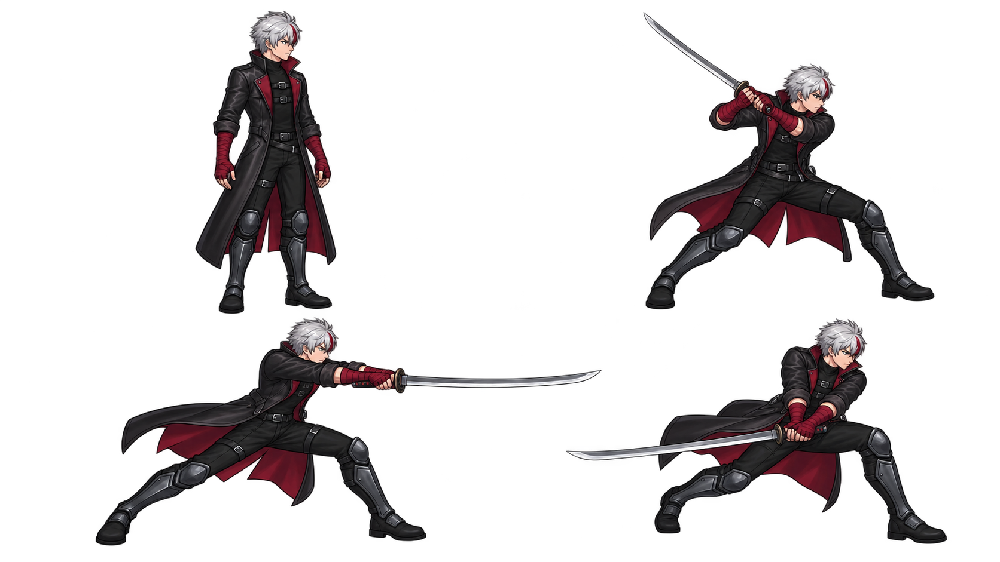

转身与受击：实际引擎画面
保留已认可的 idle。朝向立即翻面；随后是哥布林实际攻击引发的轻受击，以及独立重受击。134 张原生 2560×1440 帧缓冲直接编码，60fps，无放大。默认半速，力量感同时看实速。
第一刀：新的动作设计草案
右上蓄势，左下切过目标，右下余势。只评审重心、转体、头部随动和双手带刀的方向；这是带刀设计原图，未完成比例复核和身体/手指/可换武器分层，未接入游戏。它不是新版三连已经完成的证明。

行走、奔跑与完整三连仍在重做。跑步几次试图仍存在腿部语义或裁边问题，已拒收入库为候选档案，没有替换当前游戏资源。